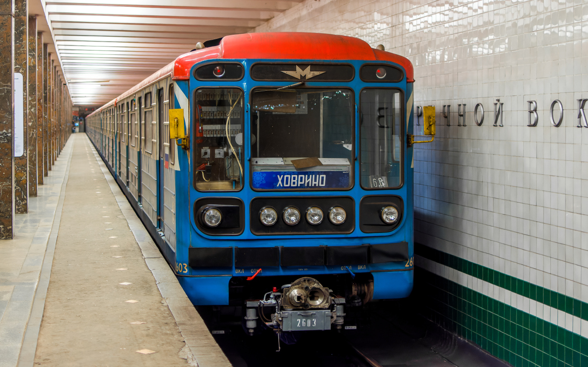
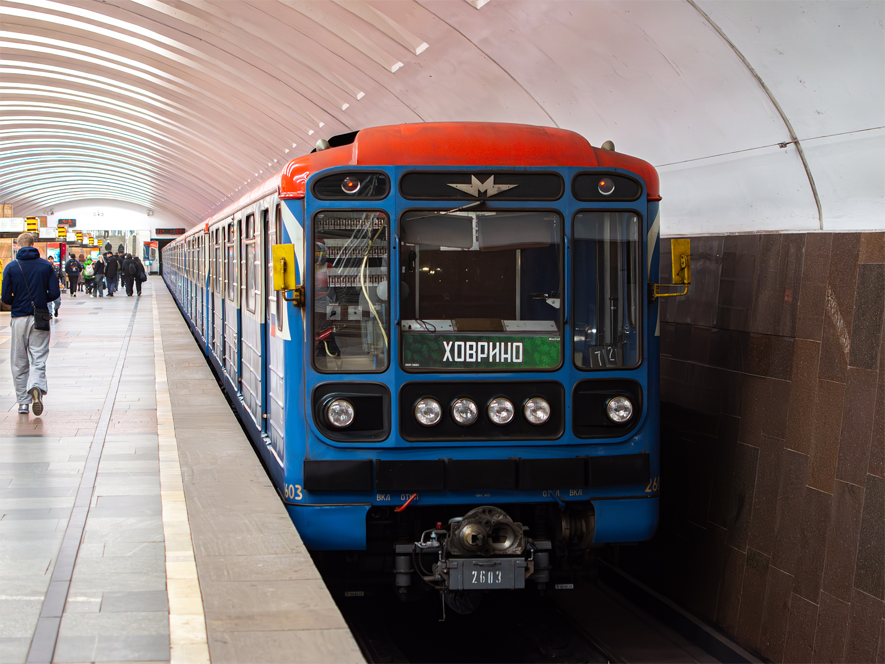
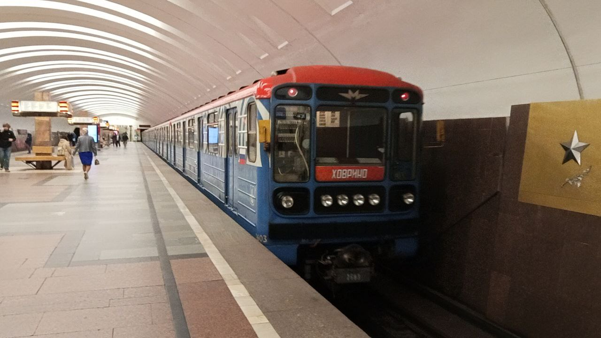
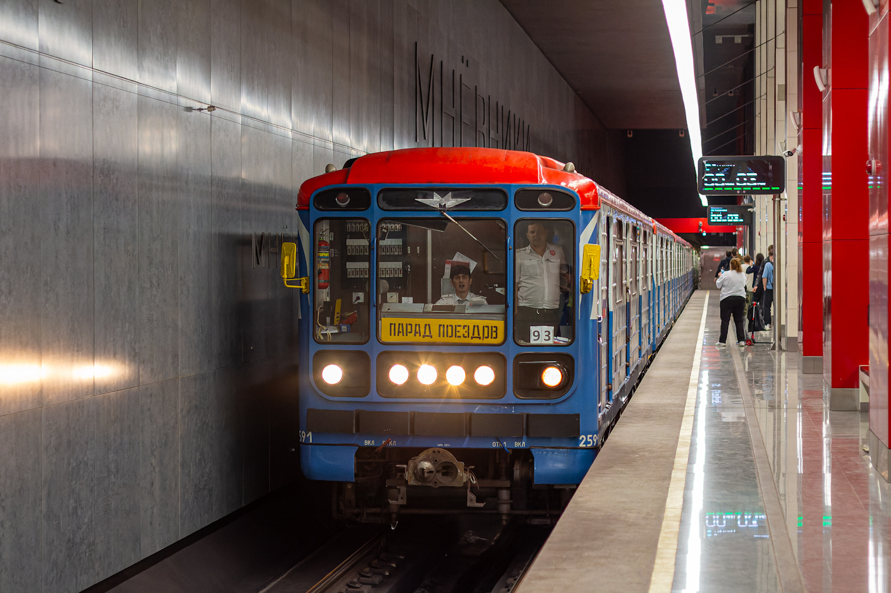
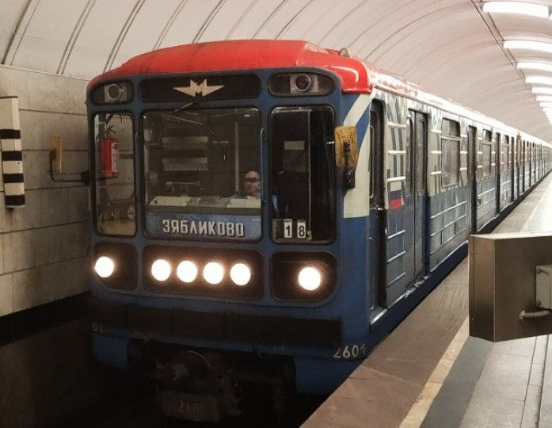

История трафаретов
Трафареты от МосСаба — это уникальное явление в оформлении поездов Московского метро, настоящее искусство на рельсах. 2025 год стал настоящим «годом трафаретов МосСаба». За 12 месяцев было реализовано пять идей с необычными трафаретами, которые внесли разнообразие в мир одинаковых «Номерных».
Всё началось в марте с зелёных летних трафаретов, в октябре вышли оранжевые осенние, в ноябре — два комплекта чёрных (беспосадочные для сцепа 2680-2681 и линейные для 0334-10102). Под конец года был создан комплект зимних трафаретов для Люблинско-Дмитровской линии (сцеп 2601-2603).
Создатели признаются, что им не всегда везло со следованиями, а привычка машинистов переворачивать трафареты во время оборота усложняла фотосъёмку. Но именно в таких мелочах и кроется транспортная эстетика!
Чёрные трафареты и 3D-цифры
Давно хотелось попробовать строгий чёрный стиль на линейных трафаретах. Многие сравнивают его с творчеством депо «Новогиреево», однако корни уходят куда глубже — всё началось с вагонов типа «И» в конце 70-х (трафарет «Испытания»). И вот чёрный снова в моде в конце 2025 года.
Настоящим украшением стали красивые белые цифры на чёрном фоне, напечатанные на 3D-принтере. Они отлично дополнили чёрные трафареты на Замоскворецкой линии. Благодаря очередному перецепу, трафареты и цифры оказались в легендарном свежепокрашенном вагоне №2550. Цифры получились рельефными, приятными на ощупь и максимально приближенными к деповскому уровню оригинальных цифр из прошлого.
Зимние трафареты (Синие)
С наступлением весны зимним трафаретам пора на покой. Перед окончанием сезона они неожиданно оказались в двух разных составах, в вагонах №2507 и №2551. Это позабавило создателей, ведь на Замоскворецкой линии трафареты катаются в легендарном №2550.
Когда стало известно, что на ЗЛ выйдет новогодний «Номерной», было решено украсить его синими трафаретами. Но маска поезда внезапно изменилась, и трафареты не подошли. На помощь пришёл «Номерной» в окрасе бренда «Московский транспорт» — №0346 / №2601. Синие «зимние» трафареты сохранили классический шрифт «Сокола», контрастность и читаемость, став украшением заурядного «Номерного».
Парад поездов
К Параду поездов на БКЛ было решено сделать для «Номерного» праздничные маршрутоуказатели. Пошли не самым очевидным путём — не просто распечатали шаблон, а отрисовали их вручную: сначала разметка карандашом, затем подтверждение маркером, и только потом полный закрас. Важен не способ, важен результат!
Внимательные зрители могли заметить у «Номерного» в правом верхнем углу трафарета название сообщества. Парадный трафарет образца 2024 года в минувшие выходные наматывал круги по Кольцевой линии. Его общий пробег по двум кольцевым линиям приблизился к отметке в 2 тысячи километров!
Фотогалерея
Все трафареты МосСаба — и ушедшие в историю, и ещё ходящие:

На Новый год 2025.

Сезонное оформление.

Сезонное оформление.

Оформление 2025 года.

На составе 0334-2550 (ТЧ-17).

На составе 2601-2603 (ТЧ-15).
Нажмите на фото для увеличения
«Трафареты от МосСаба позволяют увидеть разнообразие в итак разнообразных номерных. Как по мне, одни из самых лучших трафаретов».